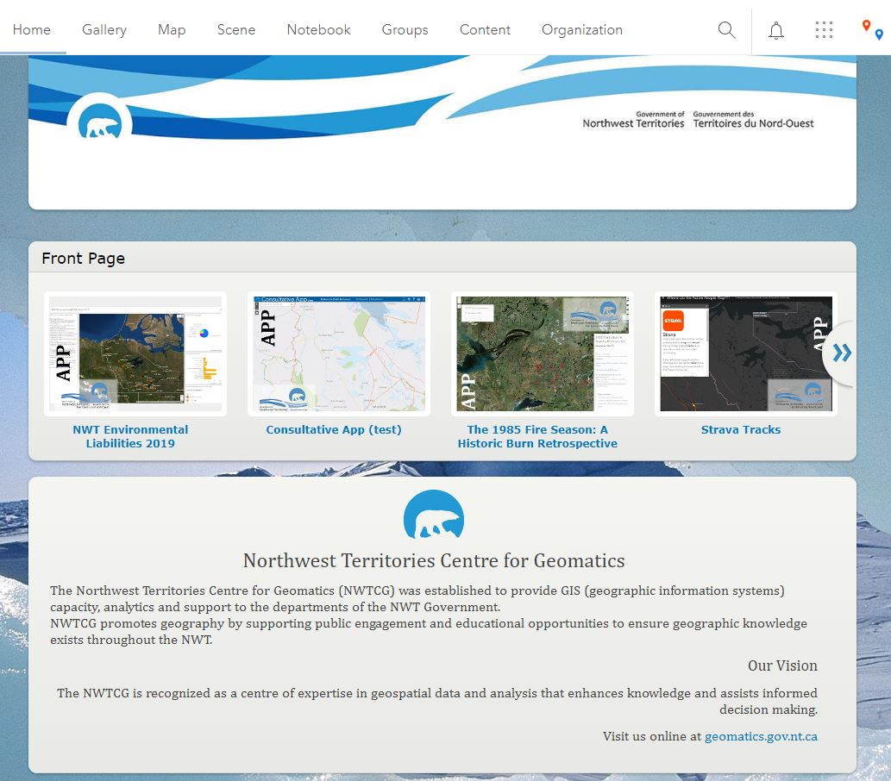
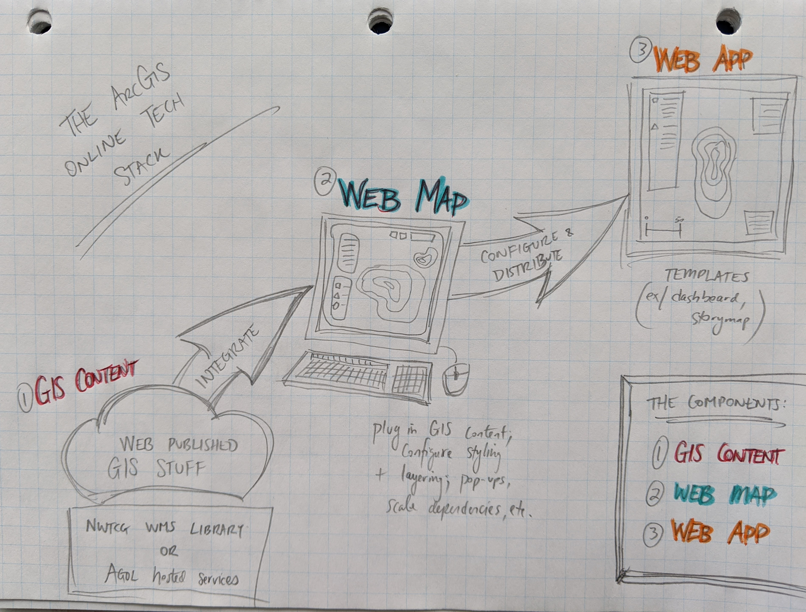
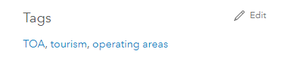
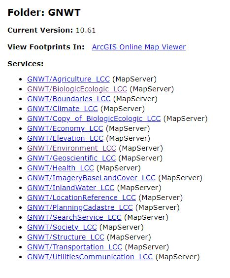

NWT Centre for Geomatics
ArcGIS Online
Guardrail Guide for Optimal Usage
This page is meant as a singular landing page for sharing resources, links and best practise recommendations to GNWTs GIS user community who wish to play in our organizational cloud mapping platform. May it provide you with rich resources and lead to our collective success in the realm of web mapping development.
The ESRI Cloud
ArcGIS Online (AGOL) is the ESRI cloud platform. It offers users with a robust framework to publish/host geospatial content, integrate web resources, develop applications, and share/distribute these resources within an organization or with the general public.
The NWT Centre for Geomatics (NWTCG) has established an organizational account for use throughout the community of GIS users within the GNWT.
Our organizational homepage is accessible (with account credentials) at :
Accounts:
Access to our organizational ArcGIS Online (AGOL) account is via unique user accounts. You can request an AGOL organizational account by contacting the Centre for Geomatics (NWTCG) @ geonwt@gov.nt.ca. You will receive an email invitation which will allow you to create a new account (user name and password) and join our organization in AGOL. Be sure to record these account credentials for future reference/use as all the content in our AGOL organizational account requires these credentials to access and engage with.
Roles & Permissions:
There are a number of different roles and permissions assigned to all NWTCG AGOL accounts. All new users will, by default, be assigned a Limited Publisher role unless other requirements are specified. The Limited Publisher role allows users to create, publish (web enable GIS data), and build geo content in AGOL but it does not permit sharing of this content publicly. By default then, all content built/created in AGOL will only be accessible within our organization initially.
If users wish to integrate their AGOL content into webpages or share more broadly with public, contact NWTCG to review and approve this content for more broad sharing and public accessibility.
Credits:
AGOL charges usage (processing and storage) based on a pre-existing credit consumption schematic. All NWTCG AGOL users are capped to 25 credits. This amount is sufficient to get going, create web maps, publish new services, &/or develop applications. If you find you’re constrained by the default credit cap contact the NWTCG to discuss.
Resources:
ESRI has many great resources available to get you rolling with mapping and exploring in AGOL. Here is a list of recommended lessons, resources and good intro material:
These are just some of the many resources ESRI makes available through its online training material. Your AGOL account will also allow you to tap into the many ESRI training resources online at https://www.esri.com/training/
Additional AGOL information and material is available at https://www.esri.com/en-us/arcgis/products/arcgis-online/resources
Content Management:
The following are best practise recommendations to consider efficient and good file management of content in AGOL:
FOLDERS:
Users should consider the use of personal folders within their own content to store related resources within a singular folder. Here’s Joseph (accompanied by some soft background harp music) to show you how to set up user folders in AGOL: https://www.youtube.com/watch?v=2YQr4A3GPsU
GROUPS:
Groups are a way to extend the concept of user folders (above) and create multi-user sharing and collaboration workspaces/directories of specific/tailored content. Members can be invited to join a group and specific permissions to group content can be managed by the group owner or an AGOL administrator. Here’s how to create/use AGOL groups: https://www.youtube.com/watch?v=OPV5C0eWAgw
FILE NAMES:
Use simple, obvious naming conventions for all your content. A group share containing the following named content will be much more readily understood than some cryptic clutter of nonsensical whimsy.
Consider, in this regard, the fact that core components of AGOL materials can be sourced to three primary components (as shown in above image):
- GIS Content
- Web Map
- Web App
CATEGORIES:
Utilizing content categorization is another useful way in which all AGOL content (features, web maps, web apps, etc.) can be organized, searched, shared and made easily discoverable. You should tag your content with project categories using the steps outlined by Kelly here: https://www.youtube.com/watch?v=lbDjHJdcMBs
*** Note that categories exist in two places: the organization (as a whole) and within groups (categories are unique by groups). Contact an AGOL Administrator or email geonwt@gov.nt.ca for assistance with category creation or amendments.
TAGGING:
Tagging AGOL content with keywords or singular text descriptors is a good practise for all material because it allows for quick and easy search functionality PLUS it’s another great way to consider organizing and recording all the content within an organizational AGOL platform. Tagging content is as simple as finding the Tags side panel on the item description page (@ bottom right) and hitting the Edit button to add new tags or amend existing ones.
You will only be able to tag the content you own or have been given edit permissions to (through a group share)
ITEM DESCRIPTION:
Adding any/all relevant information and item description to your content is another way to ensure successful project hand-off and ease of use to all other organizational users. Consider item description a high level metadata entry option with the added bonus of styling this content and embedding hyperlinks or URLs as complimentary pieces of information.
These are just some of the recommended best practise to content management in AGOL.
Content within an organizational AGOL platform can get overwhelming in volume in little time thus considering the above best practises and instituting on these recommendations is critical to long term success and content management at the organizational level.
Building with Existing Resources:
In order to reduce the bulk of content hosted on AGOL and minimize on credit consumption, wherever possible, users should tap into and utilize the NWTCG existing web mapping libraries via our production server.
Here, users can integrate and consume our public web map services (WMS) that are shared via an ISO categorization.
Here’s a step-by-step guide to integrating existing WMS in an AGOL web map.
Utilizing from the NWTCG WMS library will ensure the information you are integrating is always current and maintained by the appropriate department. Further, it will reduce the possibility of publishing redundant/duplicate data that will consume additional credits while simultaneously requiring update cycles and processes.
Additional Resources:
ArcGIS PRO
Access and licensing for ArcGIS Pro is tethered to AGOL organizational accounts. Download and
install ArcGIS Pro HERE
and then authenticate and authorize usage of this software using your AGOL account credentials.
If you wish to use ArcGIS Pro contact geonwt@gov.nt.ca to arrange
for this provision.
Geomatics User Meeting (GUM) Group
The NWTCG coordinates a large working group of GIS users within the GNWT fondly known as the GUM group. This group meets quarterly (or thereabouts) to share common topics and geo related projects and technologies. Contact NWTCG to be including in future communications from this group.
ESRI Training
Access all the many online learning tools from ESRI via https://www.esri.com/training/.
Log in here with your AGOL account and you will have access to the full slate of training
materials.
GeoNet
Join the GeoNet community and ask questions or research technical content via https://community.esri.com/. Again, you can use your AGOL account to log in to GeoNet and explore the wealth of resources there.